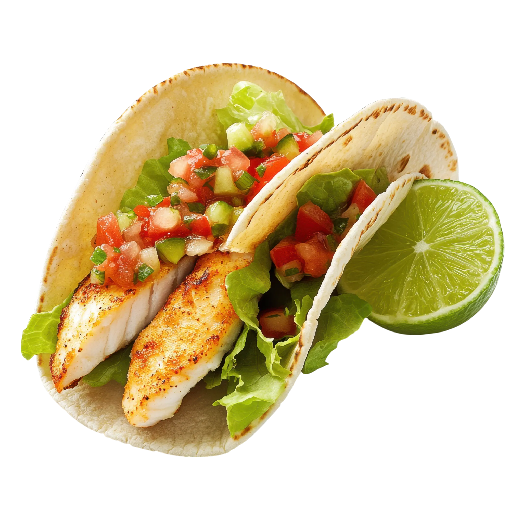

Tacos de Pescado Ligeros
Tiempo: 25 minutos · Dificultad: Fácil · Porciones: 3 (6 tacos)

Preparación
- Corta los filetes de pescado blanco en tiras o trozos medianos. Sazona uniformemente con el comino, el pimentón, sal, pimienta y unas gotas de jugo de limón.
- En un tazón pequeño, prepara la salsa ligera mezclando el yogurt griego con el jugo de limón, una pizca de sal y cilantro fresco picado. Reserva en el refrigerador.
- Calienta el aceite de oliva en una sartén antiadherente a fuego medio-alto. Agrega el pescado y cocínalo de 3 a 4 minutos por lado hasta que esté bien dorado y se desmenuce fácilmente con un tenedor.
- Calienta las tortillas en un comal o sartén seco por ambos lados hasta que estén suaves y ligeramente doradas.
- Para armar cada taco, coloca una base de repollo morado rallado sobre la tortilla caliente.
- Agrega los trozos de pescado a la plancha, una cucharada de pico de gallo y unas láminas de aguacate.
- Corona con un hilo de la salsa cremosa de yogurt y cilantro fresco extra.
- Sirve de inmediato acompañados de gajos de limón fresco.
¡Una opción fresca, baja en calorías y llena de sabor para tu cena!
Tips de nuestra comunidad
Descubre recetas, combinaciones y secretos compartidos por otros amantes de la cocina. ¿Tienes un secreto de cocina?
Compártelo con la comunidad.
Si preparas el pescado en la freidora de aire a 180°C durante 10 minutos, queda súper crujiente por fuera y jugoso por dentro sin usar casi aceite.
Mezcla un poco de chile chipotle picado o en polvo con la salsa de yogurt para darle un toque ahumado y ligeramente picante delicioso.